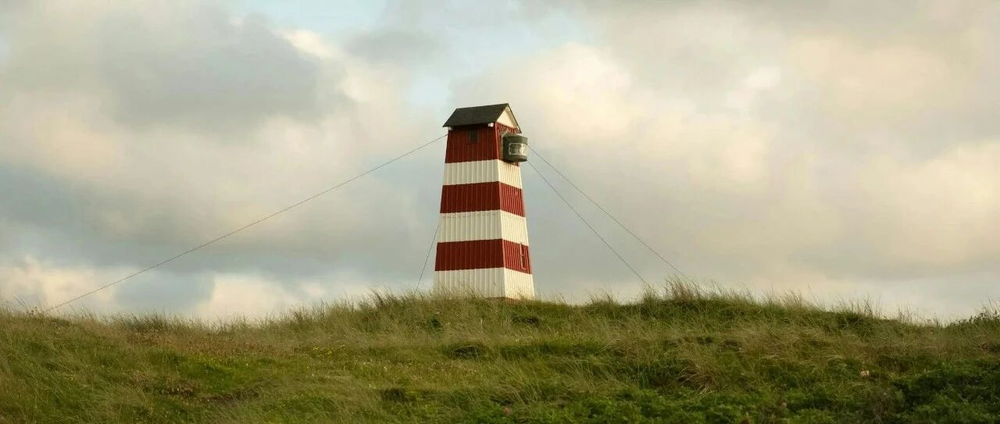

冰火两重天，真香~
伯克希尔跌至473美元，我防守型账户触发了买入设置，后续下跌还有四个买入节点设置。
防守型账户想重点加仓的主要是伯克希尔、SCHD、可口可乐，后两个上涨后迟迟未能触发下跌时的买入节点，现在伯克希尔先加仓，目标是加仓到仓位占比的10-12%左右。
最小的那个账户，也买了点进来，并设置了后续加仓点。

单独一部美版苹果手机，手机上只有银行+券商app，没有任何中资的app，所以就没法截图传送，直接拍个照，以后可能都这样发图，有辨识度，也挺好的。
稳健型账户中，纳指100和标普500这两个宽基指数ETF的占比上涨到56%，消费板块（Costco、沃尔玛、宝洁、麦当劳）普遍微跌；医药保健板块中，礼来跌和诺和诺德下跌；
联合健康反弹4%，还是那句话，“联合健康最大的利空已经过去”，这个“最大利空”是企业基本面本身，这次的利空来自于政策层面带来的不确定性。
进取型账户中，主要是美股七巨头+台积电；然后博通+AMD占比约2.35%；此外，CRCL+FIG这两个属于刮彩票性质的，合计占比约0.22%；奈飞+甲骨文占比约0.5%…
FIG我从45开始买入，然后33和28加仓，这次反弹5.62%至30美元，我成本33.1美元，设置了成本线上T掉40%，余下的留着；CRCL从75、70、65建仓和加仓，60的加仓设置迟迟没有触发。
我不喜欢追高，所以看中的个股大多数是在下跌时买入，没法预测市场，就在达到心理预期范围内开始逐步买入。刮彩票的，一般不是什么好的个股，不符合“第一兼唯一”的选股标准。
英伟达重新站上191.5美元，仓位占比攀升至46.8%；谷歌盘后逼近342美元，仓位占比重新攀升至20.5%；
特斯拉发布财报，全年总营收948.27亿美元，同比下降3%；净利润37.94亿美元，同比下降46%…不过特斯拉现在的股价，跟基本面已经没有啥关系，都靠“星辰大海”的预期在支撑。
苹果即将发布财报，现在的市场对科技股的预期非常高，稍有不如意就砸盘。
微软发布财报，资本支出激增，云业务增长放缓，财报四平八稳没有惊艳之处，盘后股价大跌。我除了原有的423和396两个防守节点，新增了一档436美元，看能不能再捞一些进来。
微软一向以稳著称，这次下跌已经跌至去年5月的价格，基本面没有恶化，只是市场对它的预期太高。这波从550美元下跌，微软的仓位占比从最高8.65%跌至6.31%，前些天465和450加仓后，仓位占比约6.45%，如果436能触发，仓位占比预计会修复6.5%…
另一家巨头Meta发布财报，第四季度营收同比增长24%，利润同比增长5.9%，新年度资本支出计划提升73%，弱化VR投入，强化AI投入。盘后，Meta大涨，股价逼近720美元。
Meta波动很大，市场对它的预期很高，又担心它在人工智能领域落伍，所以稍有不如意就砸盘。我在这个股上，以控制风险为主，不追高，逢低买入筹码，整体上控制好仓位和资金，方便应对。
Meta和微软，冰火两重天，一跌一涨，跌的给机会，涨的给结果，真香。
亚马逊等也将在未来一周时间内发布财报，到时再看看怎么样。
我整体资金还在继续创新高，公司分红近期也到账了。目前重点配置防守型账户，其他的账户就有机会时买一买，等待为主。
等着看老美会不会在3月底之前干伊朗，如果硝烟再起，那机会会多一些。
… …
跟娃们聊天，还有几天就放假了，他们都想赶紧过来看弟弟妹妹。
上海的寒假应该是全国最短的之一，只有25天，2月2日放假，2月27日上学。
主要是大儿子还没有放假，他一边上学，一边跟着公司的人学习处理公司简单事务。他吐槽现在税务开票新出什么双因子认证，必须多一道手机验证码，实在不方便。
我觉得让他多经历，挺好的，等他过来加州，我再让他去跟着学处理这边公司的一些事务，让他两边都实践对比，就知道各自的优劣势。
目前老美这边，我去年新成立的投资公司，主要是在看一些科技领域的机会，去年底投了一个AI项目。
也很难，大公司有资本几亿几十亿地在砸，项目遍地开花，我这种没有那个资金体量，就只能精选一些项目，做天使轮投资，每个项目投100-500万美元试试水。
不动产管理那家公司倒是可以让他去试试水，目前有三块地，刚刚可以让他了解一下这边土地管理/盈利模式和国内的不同，顺便可以了解背后的原因。
老三问我，为什么关羽这么厉害的武将，反而成了财神，他似乎不爱财，也跟财不沾边呀？
他之前很喜欢看《三国演义》，对三国特别熟悉。我大概跟他讲了一下来龙去脉：
关羽在三兄弟离散时，被困下邳，为保全刘备的两位夫人和有用之身跟兄弟团聚，所以降汉不降曹。
曹操为了拉拢他，给他东汉末年武将的最高荣誉“封侯”，也就是汉寿亭候，外加一大堆金银财宝、美女和赤兔马。关羽将金银封存，美女送嫂夫人差使。
最后帮曹操斩了颜良、文丑，报恩后挂印封金，过五关斩六将寻刘备而去。后来在华容道又为了报恩放曹操离去。
后来如日中天、威镇华夏时被江东鼠辈背刺，吕蒙设“白衣渡江”计破荆州，孙权没有曹操的爱才之心，直接斩了关羽，人头送去嫁祸曹操。
关羽虽死，但其忠、义、信、勇的品格让他的人格形象非常饱满。
在古代，身首异处，人是会有怨念的，所以关羽做了400多年的“厉鬼”，终日游荡世间，呼唤着“还我头来！”，彼时人们祭拜他更多是为了安抚。
直到隋唐时，佛教大兴，在玉泉山被佛门一位智者点化“你还能叫‘还我头来’，那颜良文丑庞德等一众被你斩首的将士去哪要他们的头？”，关羽开悟，被佛门收纳为护法神，封伽蓝菩萨，也算是发挥了他武力出众的优势。
再到北宋，对外屡战屡败，但内部经济繁荣，宋徽宗让道教作法，请关羽在老家解州降伏盐池做恶的孽龙。
官方封关羽为真君、王。这是第一次官方认证，证明关羽“招财护产”能力。因为古代，盐是非常重要的生产资料和国家财政的财源，能招财进宝、利市发财。
再到元明时，随着杂剧和《三国演义》流行，关羽“忠、义、信、勇”形象深入人心，成为社会共识的诚信代表。
最后，明清时，晋陕等重要商帮，因跨长途贸易，非常依赖信用和同业团结，开始奉关羽为行业神，武财神智能定型；万历、顺治、乾隆三位更是封帝改谥，让关羽崇拜全民化，成为超级神明。
随着全球化进程开始，关羽也随华人足迹遍布全球，从此成为华人商帮认同、信用担保和文化认同的重要符号。
简单来说，关羽成为武财神，并不是因为他直接“掌管金钱”，而是因为他的“信、义、忠”等人格品质，以及“护佑”等神格，满足传统商业社会的需求：
法治不完善，就用神祇信仰来维系信用体系，保障交易安全，凝聚行业力量。
就这样吧。
免责声明：本人提供的信息仅供参考，不构成投资建议。本人的交易不代表任何立场；投资者应根据自身财务状况、投资目标等情况自主做出投资决策并承担投资风险。投资有风险，入市需谨慎。